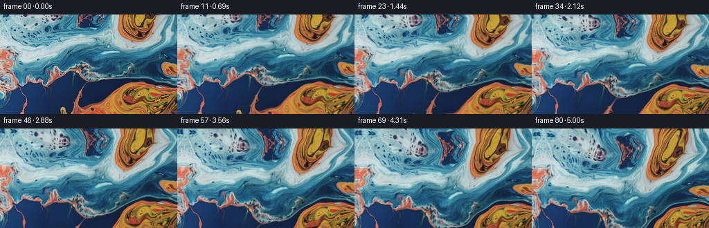
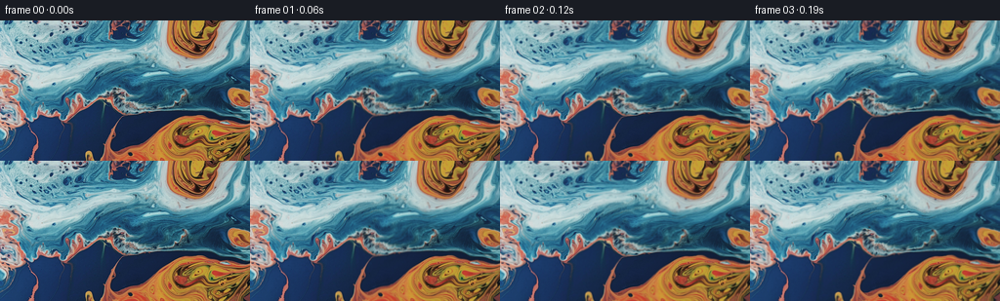

CODING AGENTS AS PIXEL WORLD MODELS
traex/GPT-6.1-Sol · 0003_s2
点击播放 · 原生 RGB 像素
逐轮保存的候选
回放视频、检查图与代码变化。
每份候选均可单独播放。实际图片检查记录在下方工具轨迹中。
候选 01播放与检查图
点击播放 · 原生 RGB 像素


展开代码变化
--- 上一保存版本
+++ 本次保存版本
@@ -0,0 +1,155 @@
+"""Pixel-based macro-liquid animation; no external assets or models."""
+from pathlib import Path
+import numpy as np
+from PIL import Image
+import artifact_io
+
+
+ROOT = Path(__file__).resolve().parent
+
+
+def sample(a, x, y):
+ """Bilinear interpolation, also used to transport material coordinates."""
+ h, w = a.shape[:2]
+ x = np.clip(x, 0, w - 1.001)
+ y = np.clip(y, 0, h - 1.001)
+ ix = x.astype(np.int32)
+ iy = y.astype(np.int32)
+ fx = x - ix
+ fy = y - iy
+ if a.ndim == 3:
+ fx, fy = fx[..., None], fy[..., None]
+ return ((a[iy, ix] * (1 - fx) + a[iy, ix + 1] * fx) * (1 - fy)
+ + (a[iy + 1, ix] * (1 - fx) + a[iy + 1, ix + 1] * fx) * fy)
+
+
+def reflected(x, length):
+ x = np.mod(x, 2 * (length - 1))
+ return np.where(x <= length - 1, x, 2 * (length - 1) - x)
+
+
+def texture(im, x, y):
+ """Continue the existing liquid at the edges using bent pixel reflection.
+
+ Only a narrow strip above the photograph is uncovered by the camera.
+ Reflection is sheared and curved there to avoid repeating a straight seam.
+ """
+ d = np.maximum(-y, 0)
+ envelope = 1 - np.exp(-d / 12)
+ sx = x + .27 * d + 4.2 * envelope * np.sin(.046 * x + .057 * d)
+ sy = np.where(y < 0,
+ .73 * d + 2.4 * envelope * np.sin(.053 * x + .032 * d), y)
+ return sample(im, reflected(sx, im.shape[1]), reflected(sy, im.shape[0]))
+
+
+def velocity(x, y, t):
+ """Smooth, divergence-free, multiscale surface circulation in pixels/s."""
+ vx = np.full_like(x, 1.1)
+ vy = np.full_like(y, -.25)
+ # Broad circulation pulls the blue and amber regions into soft eddies.
+ vortices = [(73., 53., 65., .087, .3),
+ (184., 111., 58., -.102, 1.7),
+ (197., 13., 36., .081, 2.2),
+ (21., 96., 32., -.060, .9)]
+ for cx, cy, radius, omega, phase in vortices:
+ cx += 3.0 * np.sin(.31 * t + phase)
+ cy += 2.0 * np.cos(.27 * t + phase)
+ dx, dy = x - cx, y - cy
+ strength = omega * (1 + .10 * np.sin(.53 * t + phase))
+ g = strength * np.exp(-(dx * dx + dy * dy) / (2 * radius * radius))
+ vx -= dy * g
+ vy += dx * g
+ # Curl of travelling stream functions, rather than independent noisy axes.
+ for kx, ky, speed, frequency, phase in [
+ (.043, .034, 1.45, -.44, .4),
+ (-.037, .070, 1.10, .62, 2.0),
+ (.089, .047, .63, -.87, 3.7),
+ (.126, -.075, .36, 1.05, 1.3)]:
+ q = np.cos(kx * x + ky * y + frequency * t + phase)
+ norm = np.hypot(kx, ky)
+ vx += (speed * ky / norm) * q
+ vy -= (speed * kx / norm) * q
+ return vx, vy
+
+
+def ripple(x, y, t):
+ """Small refractive capillary waves, moving independently of the eddies."""
+ rx = np.zeros_like(x)
+ ry = np.zeros_like(y)
+ for kx, ky, amp, omega, phase in [
+ (.154, .111, .72, 1.32, .7),
+ (-.113, .203, .49, -1.75, 2.1),
+ (.302, .087, .22, 2.35, 4.0)]:
+ # Subtract the starting wave to keep the initial photograph unchanged.
+ wave = np.sin(kx * x + ky * y + omega * t + phase)
+ wave -= np.sin(kx * x + ky * y + phase)
+ norm = np.hypot(kx, ky)
+ rx += amp * kx / norm * wave
+ ry += amp * ky / norm * wave
+ return rx, ry
+
+
+def generate():
+ image = np.asarray(Image.open(ROOT / 'first_frame.png').convert('RGB'))
+ assert image.shape == (144, 256, 3)
+ im = image.astype(np.float32)
+ n, h, w = 81, 144, 256
+ frames = np.empty((n, h, w, 3), np.uint8)
+ frames[0] = image
+ # Material coordinates in a padded world, advected without repeatedly
+ # interpolating the RGB texture itself (preserves the photographic detail).
+ pad = 80
+ gy, gx = np.mgrid[-pad:h + pad, -pad:w + pad].astype(np.float32)
+ material = np.stack([gx, gy], axis=-1)
+ yy, xx = np.mgrid[:h, :w].astype(np.float32)
+ f = 285.0
+ nx, ny = (xx - (w - 1) / 2) / f, (yy - (h - 1) / 2) / f
+ dt = 1 / 32
+
+ for i in range(1, n):
+ t = i / 16
+ # Two midpoint semi-Lagrangian steps per output frame. The field
+ # transports source coordinates, not color, so it cannot bleach out.
+ for sub in range(2):
+ tm = (i - 1) / 16 + (sub + .5) * dt
+ vx, vy = velocity(gx, gy, tm)
+ bx, by = gx - .5 * dt * vx, gy - .5 * dt * vy
+ vx, vy = velocity(bx, by, tm)
+ material = sample(material, gx - dt * vx + pad,
+ gy - dt * vy + pad).astype(np.float32)
+
+ # An actual ray rotation gives the characteristic upward tilt,
+ # including its gentle perspective change, rather than a flat zoom.
+ u = t / 5.0
+ # Smooth acceleration from rest, then steady camera travel.
+ travel = (u - .12 * (1 - np.exp(-u / .12))) / (1 - .12 * (1 - np.exp(-1 / .12)))
+ angle = .086 * travel
+ cs, sn = np.cos(angle), np.sin(angle)
+ denom = ny * sn + cs
+ world_x = (w - 1) / 2 + f * nx / denom
+ world_y = (h - 1) / 2 + f * (ny * cs - sn) / denom
+ rx, ry = ripple(world_x, world_y, t)
+ # Surface refraction slightly favors the bright, rougher upper liquid.
+ rstrength = .65 + .35 / (1 + np.exp((world_y - 73) / 25))
+ coords = sample(material, world_x + rx * rstrength + pad,
+ world_y + ry * rstrength + pad)
+ color = texture(im, coords[..., 0], coords[..., 1])
+
+ # Faint moving illumination on the surface; the original photographic
+ # highlights remain dominant. This varies smoothly rather than flickers.
+ wave = (.60 * (np.sin(.069 * world_x + .087 * world_y - .83 * t)
+ - np.sin(.069 * world_x + .087 * world_y))
+ + .40 * (np.sin(-.112 * world_x + .057 * world_y + 1.12 * t + 2)
+ - np.sin(-.112 * world_x + .057 * world_y + 2)))
+ brightness = color.mean(axis=-1) / 255
+ gain = 1 + .017 * wave
+ glint = 2.0 * wave * np.clip((brightness - .38) / .40, 0, 1)
+ color = color * gain[..., None] + glint[..., None]
+ frames[i] = np.clip(np.rint(color), 0, 255).astype(np.uint8)
+
+ artifact_io.save(frames, ROOT)
+ return frames
+
+
+if __name__ == '__main__':
+ generate()
可观测工具轨迹
实际执行的命令与返回图片。
命令 1exit 0
/bin/bash -lc 'ls -la; cat prompt.txt; cat GENERATION_RULES.md'
命令 2exit 0
/bin/bash -lc "cat task_spec.json; cat artifact_io.py; python - <<'PY'
from PIL import Image
import numpy as np
im=np.array(Image.open('first_frame.png').convert('RGB'))
print('shape',im.shape)
print('extrema',im.min((0,1)),im.max((0,1)), 'mean',im.mean((0,1)))
# averages in a 32x18 grid, symbols from coarse RGB classes
im=np.array(Image.open('first_frame.png').convert('RGB').resize((64,36)))
for row in im:
print(''.join('K' if max(c)<40 else '.' if max(c)<90 else 'O' if c[0]>c[2]*1.35 and c[0]>c[1]*1.10 else 'B' if c[2]>c[0]*1.4 else 'C' if c[1]>c[0]*1.3 and c[2]>c[0]*1.3 else 'W' if min(c)>160 else 'o' if c[0]>c[2] else 'b' for c in row.astype(float)))
# sample coarse RGB grid
im=np.array(Image.open('first_frame.png').convert('RGB').resize((16,9)))
for r in im: print(' '.join('%02x%02x%02x'%tuple(p) for p in r))
PY"命令 3exit 0
/bin/bash -lc "python - <<'PY'
import numpy as np
from PIL import Image
im=np.array(Image.open('first_frame.png')).astype(float)
# display luminance at 96x54 text only
im=np.array(Image.fromarray(im.astype('uint8')).resize((96,54))).astype(float)
lum=im@np.array([.2126,.7152,.0722]); chars=' .:-=+*#%@'
for r in lum: print(''.join(chars[min(9,int(v/256*10))] for v in r))
# color of top pixels and feature difference/grain
im=np.array(Image.open('first_frame.png')).astype(float)
for y in [0,1,4,8,16,24,32,48,64,80,96,112,128,143]:
print(y, 'top mean',im[y].mean(0).round(1),'dx',np.abs(np.diff(im[y],axis=0)).mean().round(1))
PY"命令 4exit 0
/bin/bash -lc "OPENBLAS_NUM_THREADS=1 python generate.py && python - <<'PY'
import numpy as np
from PIL import Image
from pathlib import Path
fs=np.stack([np.array(Image.open(p)) for p in sorted(Path('frames').glob('*.png'))])
print('Output',fs.shape,fs.dtype,'first identical',np.array_equal(fs[0],np.array(Image.open('first_frame.png'))))
d=np.abs(np.diff(fs.astype(float),axis=0))
print('Framewise changes',d.mean((1,2,3))[::8].round(2), 'max',d.mean((1,2,3)).max())
for i in (0,1,20,40,60,80):
f=fs[i].astype(float)
print(i,'mean',f.mean((0,1)).round(2),'spatial diff',np.abs(np.diff(f,axis=0)).mean().round(2),np.abs(np.diff(f,axis=1)).mean().round(2),'edge',np.abs(np.diff(f[:35],axis=0)).mean((1,2)).round(2))
PY"命令 5exit 2
/bin/bash -lc 'if command -v ffmpeg >/dev/null 2>&1; then ffmpeg -hide_banner -loglevel error -y -framerate 16 -i frames/%02d.png -c:v libx264 -crf 17 -pix_fmt yuv420p -movflags +faststart video.mp4; fi; ls -lh pixels.npz index.html video.mp4 generate.py'
命令 6exit 0
/bin/bash -lc "python - <<'PY' import importlib.util for m in ['imageio_ffmpeg','imageio','av','cv2']: print(m, bool(importlib.util.find_spec(m))) PY"
命令 7exit 0
/bin/bash -lc "python - <<'PY'
import av
from PIL import Image
import numpy as np
from pathlib import Path
out=av.open('video.mp4','w')
st=out.add_stream('libx264',rate=16)
st.width=256; st.height=144; st.pix_fmt='yuv420p'; st.options={'crf':'17','preset':'medium'}
for p in sorted(Path('frames').glob('*.png')):
f=av.VideoFrame.from_ndarray(np.array(Image.open(p)),format='rgb24')
for packet in st.encode(f): out.mux(packet)
for packet in st.encode(): out.mux(packet)
out.close()
c=av.open('video.mp4'); s=c.streams.video[0]
print('MP4:',s.frames,'frames,',s.width,s.height,'rate',s.average_rate)
PY"保存候选 1 份；完成命令 7 次；可验证图片返回 0 张。原始 API 响应与完整日志保留在本地。